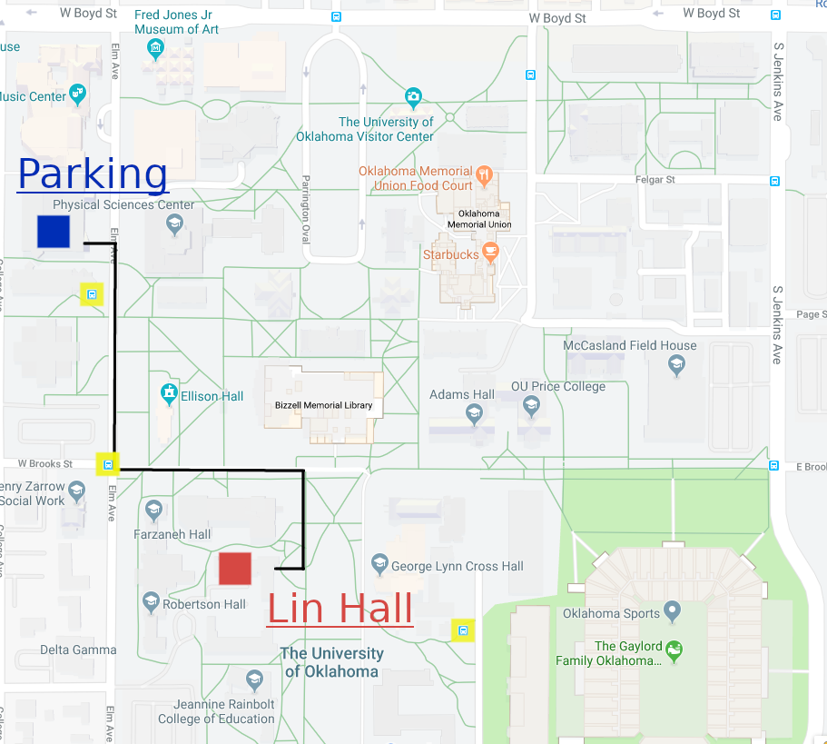
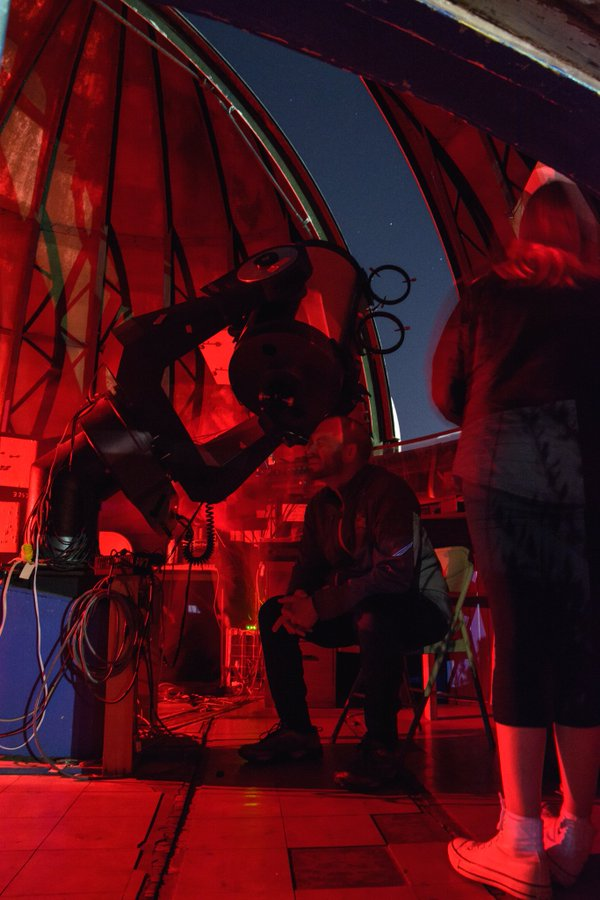

Info for Observers
Latitude : '+35.202431' or '+35:12:08.8'
Longitude: '-97.444104' or '-97:26:38.8'
General Information
Every Wednesday night while OU is in session, the Physics and Astronomy department sponsors FREE public star parties on the roof of the Lin Hall observatory, which is located on the just south of the campus Bizzell Memorial Library. Look for the building with the silver dome on top. To reach the roof, enter the east stairwell and take the elevator to the 3rd floor.
Note: The new observatory is now wheelchair accessible.
A typical night could include a planet or two, binary stars, star clusters, or maybe one of the brighter nebulae. All ages are welcome, but we ask that younger children be under adult supervision at all times.
Viewing times change throughout the year, so please check this page for current observing times and weather cancellations. The final decision on weather cancellations will be made three hours before the scheduled start time at the latest. For the latest cloud predictions at the observatory, go to current weather or click on the clouds: 

We have obtained permission for visitors to park in the north Elm Ave parking garage next to the Carlett Music Center on star party evenings.
Construction of Lin Hall Observatory
With the completion of the new Chun Lin Hall building of research in late 2018, a new public observing facility was build atop the state-of-the-art building. The building, built to high vibration tolerance, will provide the best viewing experience for astronomical seeing and imaging. Atop the building, on the 3rd floor, rests a brand new 14in Meade SCT polar mounted telescope with a fixed imager, capable of remote observations and unprecedented astronomical images taken at OU. In addition to this research grade telescope, 9 new 8in telescopes were also installed with vertically adjustable stands to aid with public outreach and the numerous astronomy labs taught at OU. It is estimated over a hundred students use the telescopes each semester and over two-hundred community members join us for star parties. With the introduction of this one-of-a-kind facility, we can now provide the best service to the community and our fellow students. Clear skies!
History Old Observatory
Built in 1939, with a 10 inch Newtonian reflector and a smaller 3.5 inch telescope, it was housed in a 16-foot dome atop what was at the time, the southernmost building on campus. In 1995, the original 10 inch telescope was replaced by a 0.4 metres (16 inches) Meade SCT (shown below) (Credit wikipedia). Currently the facility houses an 11 inch Celestron, numerous smaller 8 inch Celestrons, in addition to the main 16 inch Meade.

Research
While the facilities used to be utilized by OKC and Norman proper for research purposes, the telescopes have since retired to be used for outreach and public service. During the time of research, professional photographics plates were taken in numerous surveys and detailed observations runs by students, professors, and researchers. Nearly 20,000 original photographic glass plates are still housed at the observatory.
Current Weather

Contact Lunar Sooners
Please contact us if you are interested in any of the work we do or have any questions...